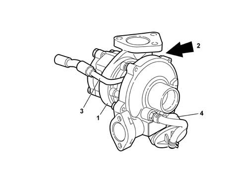

1064A turbo charger assembly
- Path
- Descriptions > 10 ENGINE > 1064 ENGINE TURBOCHARGING SYSTEM > 1064A turbo charger assembly
- Kind
- system description
- Applies to
- engines: 1.3 JTD 16v; all production periods
- Interactive page
- https://sloeber94.github.io/elrnDB-fPnd/en/#/2750915
Applies to: engines: 1.3 JTD 16v; all production periods
BORG WARNER TURBOCHARGER
The turbocharger (1) is connected to the exhaust manifold its purpose is to increase the volumetric output of the engine.
It basically consists of two impellers fitted on the same shaft, which rotates on two floating bearings which are lubricated by means of a branch (3) off the engine lubrication system.

1 - Turbocharger 2 - Waste gate 3 - Lubrication circuit branch 4 - Pneumatic actuator
Applies to: engines: 1.3 JTD 16v; all production periods
BORG WARNER TURBOCHARGER
The oil used disperses some of the large amount of heat which is given off by the exhaust gases at the turbine. There is a waste-gate valve (2) fitted on the turbocharger, controlled by a pneumatic actuator (5), which allows the passage of exhaust gases to the turbine to be choked depending on the pressure reached at the compressor outlet.